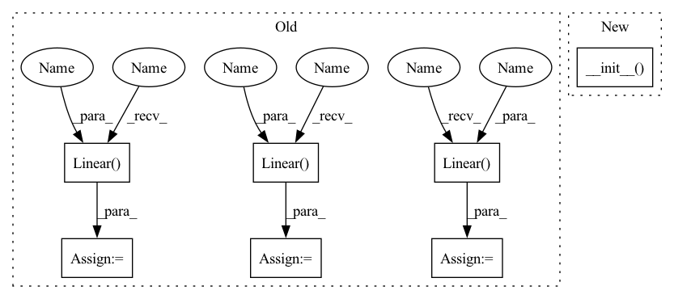

Pattern ID :16684

Before Change
def __init__(self, input_size, hidden_size, bias=True, init_weight=None):
super(LSTMCell, self).__init__()
self.linear_i_i = nn.Linear(input_size, hidden_size, bias=bias)
self.linear_i_h = nn.Linear(hidden_size, hidden_size, bias=bias)
self.linear_f_i = nn.Linear(input_size, hidden_size, bias=bias)
self.linear_f_h = nn.Linear(hidden_size, hidden_size, bias=bias)
self.linear_g_i = nn.Linear(input_size, hidden_size, bias=bias)
self.linear_g_h = nn.Linear(hidden_size, hidden_size, bias=bias)
self.linear_o_i = nn.Linear(input_size, hidden_size, bias=bias)
self.linear_o_h = nn.Linear(hidden_size, hidden_size, bias=bias)
self.input_size = input_size
After Change
class LSTMCell(LSTMCellBase):
LSTMCell implentation using Linear modules.
def __init__(self, *args, **kwargs):
super(LSTMCell, self).__init__(*args, **kwargs)
self.linear_ih = nn.Linear(self.input_size, 4 * self.hidden_size, bias=self.bias)
self.linear_hh = nn.Linear(self.hidden_size, 4 * self.hidden_size, bias=self.bias)
def forward(self, input, hidden):
In pattern: SUPERPATTERN
Frequency: 6
Non-data size: 7
Instances
Fragment ID: 55901012
Project Name: gpauloski/kfac_pytorch
Commit Name: 71096019616b85a4312b1ee4f0fd883e628712a2
Time: 2020-07-29
Author: gpauloski@yahoo.com
File Name: kfac/modules/lstm.py
M Class Name: LSTMCell
N Class Name: LSTMCell
M Method Name: __init__(1)
N Method Name: __init__(5)
M Parent Class: LSTMCellBase
N Parent Class: nn.Module
M File Name: kfac/modules/lstm.py
N File Name: kfac/modules/lstm.py
M Start Line: 24
M End Line: 42
N Start Line: 73
N End Line: 76
'>
Before Change
self.linear_i_h = nn.Linear(hidden_size, hidden_size, bias=bias)
self.linear_f_i = nn.Linear(input_size, hidden_size, bias=bias)
self.linear_f_h = nn.Linear(hidden_size, hidden_size, bias=bias)
self.linear_g_i = nn.Linear(input_size, hidden_size, bias=bias)
self.linear_g_h = nn.Linear(hidden_size, hidden_size, bias=bias)
self.linear_o_i = nn.Linear(input_size, hidden_size, bias=bias)
self.linear_o_h = nn.Linear(hidden_size, hidden_size, bias=bias)
self.input_size = input_size
self.hidden_size = hidden_size
self.bias = bias
After Change
class LSTMCell(LSTMCellBase):
LSTMCell implentation using Linear modules.
def __init__(self, *args, **kwargs):
super(LSTMCell, self).__init__(*args, **kwargs)
self.linear_ih = nn.Linear(self.input_size, 4 * self.hidden_size, bias=self.bias)
self.linear_hh = nn.Linear(self.hidden_size, 4 * self.hidden_size, bias=self.bias)
def forward(self, input, hidden):
'>
Fragment ID: 55901014
Project Name: gpauloski/kfac_pytorch
Commit Name: 71096019616b85a4312b1ee4f0fd883e628712a2
Time: 2020-07-29
Author: gpauloski@yahoo.com
File Name: kfac/modules/lstm.py
M Class Name: LSTMCell
N Class Name: LSTMCell
M Method Name: __init__(1)
N Method Name: __init__(5)
M Parent Class: LSTMCellBase
N Parent Class: nn.Module
M File Name: kfac/modules/lstm.py
N File Name: kfac/modules/lstm.py
M Start Line: 24
M End Line: 42
N Start Line: 73
N End Line: 76
'>
Before Change
class MessageAttentionHead(nn.Module):
def __init__(self, appearance_size, spatial_size, representation_size, node_type):
super().__init__()
self.fc_1 = nn.Linear(appearance_size, representation_size)
self.fc_2 = nn.Linear(spatial_size, representation_size)
self.fc_3 = nn.Linear(representation_size, representation_size)
if node_type == "human":
self._forward_method = self._forward_human_nodes
elif node_type == "object":
self._forward_method = self._forward_object_nodes
After Change
class MessageAttentionHead(AttentionHead):
def __init__(self, appearance_size, spatial_size, representation_size, node_type, cardinality):
super().__init__(appearance_size, spatial_size, representation_size, cardinality)
if node_type == "human":
self._forward_method = self._forward_human_nodes
elif node_type == "object":
'>
Fragment ID: 55900993
Project Name: fredzzhang/spatio-attentive-graphs
Commit Name: 8642f89cdf0f68d2d58af441033e190236bd28cf
Time: 2020-11-13
Author: frederic.zhang@anu.edu.au
File Name: interaction_head.py
M Class Name: MessageAttentionHead
N Class Name: MessageAttentionHead
M Method Name: __init__(6)
N Method Name: __init__(5)
M Parent Class: AttentionHead
N Parent Class: nn.Module
M File Name: interaction_head.py
N File Name: interaction_head.py
M Start Line: 268
M End Line: 271
N Start Line: 285
N End Line: 286
'>
Before Change
class Critic(nn.Module):
def __init__(self,state_dim,hidden_dim):
super(Critic, self).__init__()
self.fc1 = nn.Linear(state_dim,hidden_dim)
self.fc2 = nn.Linear(hidden_dim,hidden_dim)
self.v = nn.Linear(hidden_dim,1)
for layer in self.modules():
if isinstance(layer, nn.Linear):
nn.init.orthogonal_(layer.weight)
After Change
class Critic(Network):
def __init__(self, layer_num, input_dim, output_dim, hidden_dim, activation_function, last_activation = None):
super(Critic, self).__init__(layer_num, input_dim, output_dim, hidden_dim, activation_function ,last_activation)
def forward(self, *x):
x = torch.cat(x,-1)
return self._forward(x)
'>
Fragment ID: 55900994
Project Name: seolhokim/mujoco-pytorch
Commit Name: 0ce335459ae78887c789686fc20f23c207637d14
Time: 2021-05-12
Author: kilmya1@naver.com
File Name: networks/network.py
M Class Name: Critic
N Class Name: Critic
M Method Name: __init__(7)
N Method Name: __init__(3)
M Parent Class: Network
N Parent Class: nn.Module
M File Name: networks/network.py
N File Name: networks/network.py
M Start Line: 26
M End Line: 38
N Start Line: 23
N End Line: 24